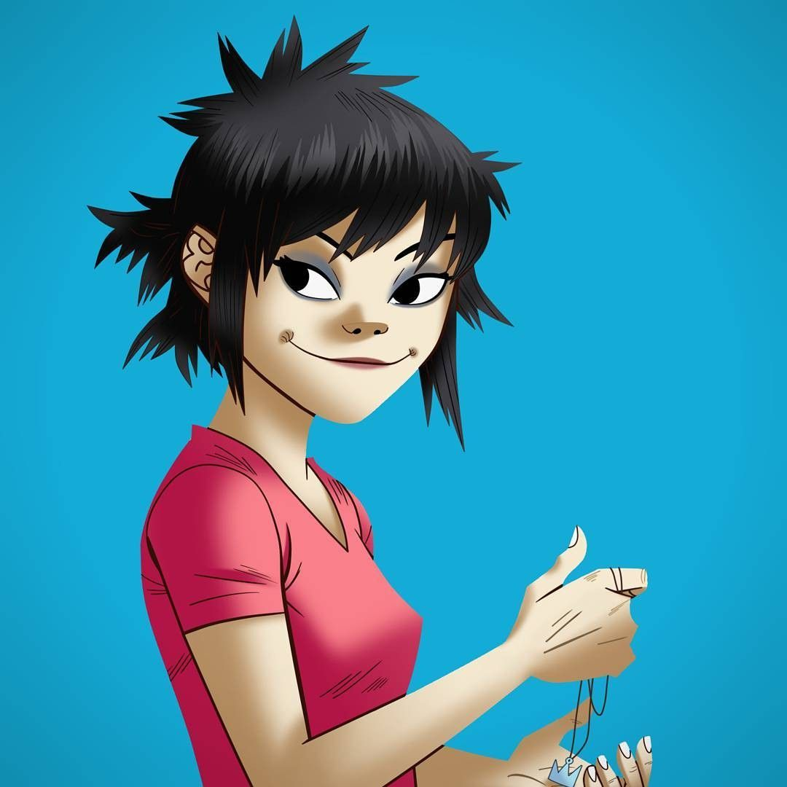

Noodle
Noodle proporciona la guitarra principal y los teclados, así como algunas voces ocasionales para la banda. Al igual que todos los demás miembros de la banda Gorillaz, fue creada en 1998 por Damon Albarn y Jamie Hewlett. Originaria de Japón, Noodle ha sido interpretada por Haruka Kuroda, Miho Hatori de Cibo Matto y Haruka Abe. Originalmente, Noodle fue concebida por el co-creador Jamie Hewlett como una joven de 17 años llamada Paula Cracker, pero el co-creador Damon Albarn señaló que el personaje era demasiado similar a los personajes que Hewlett suele dibujar y recomendó que intentara crear "algo diferente". Siguiendo el consejo de Albarn, Hewlett diseñó una ilustración de una niña japonesa de 10 años llamada Noodle, que es experta en artes marciales. En octubre de 2016, Noodle se convirtió en embajadora global de Jaguar Racing y apareció en un corto comercial publicitario de la compañía.
